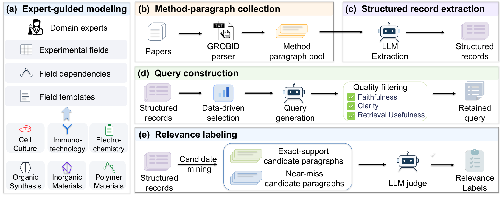
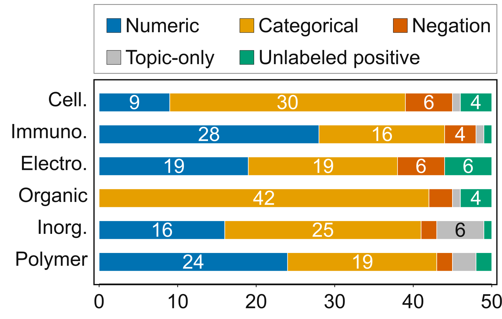

ProSearch 是一个专门测“多条件实验方案检索”的基准：研究者找实验步骤时往往同时带着好几个条件，而一段方法描述里常常并列写着好几套实验方案，检索器必须确认所有条件落在同一套方案上，才算找对。这篇论文的贡献是把这种需求做成 1,515 条 query、覆盖六个实验科学领域的评测集，并用它证明现有检索器在这件事上很弱：19 个检索器里最好的 Qwen3-Embedding-8B 平均 nDCG@10 只有 0.290，加上重排也只到 0.474（表 6、表 8）。我认为这个基准值得做检索和 RAG 的团队关注，它测出的是一个通用短板：检索器能找到主题对的段落，但排在前面的错误结果里，九成至少有一个条件并不满足。
它要测的问题：条件要“绑”在同一套方案上
举论文里的例子：研究者想找某种细胞在 37°C 下培养、且不用 DMEM（一种常用的细胞培养基）的实验步骤（§1）。难点不在于找出提到这些词的段落，而在于一段方法描述常常同时写了几组实验，比如一组用 DMEM，另一组换了培养基、温度也不同。三个条件都在同一段里出现，却可能分属两组实验，按关键词或语义相似度打分就会把这种段落排得很高。
论文把这个要求写成相关性定义（§3.1）：每段文字先拆成若干条“实验方案记录”，每条记录对应一套前后一致的实验配置；只要有一条记录同时满足 query 的全部条件，这段才算相关。论文把这种要求叫作条件绑定（joint constraint binding），已有基准里 MultiConIR 也要求条件绑定，但针对的是结构化条目；ProSearch 的区别在于要在非结构化的方法文字里做绑定（表 1、§2）。
每条 query 带 3–5 个明确条件，条件由“字段、运算、取值”组成，例如“培养温度 等于 37°C”或“培养基 不是 DMEM”。其中既有数值条件，也有排除某种试剂或做法的否定条件（§3.1、图 3）。
数据怎么造出来

构建分四步（§3.2，图 1）：
- 专家建模。六个领域（细胞培养、免疫技术、电化学、有机合成、无机材料、高分子材料）各由一位专家挑一个代表性实验类型，定下共 60 个实验字段以及字段之间的依赖。比如“汇合度”（细胞铺满培养面的比例，通常用百分比表示）被专家规定为依赖“培养方式”这个字段，所以只有汇合度、没有培养方式的组合会被过滤掉。
- 收集语料。从 OpenAlex 收 2020–2025 年的开放获取论文，只保留方法章节的段落，每个领域的段落数在 30,371 到 93,315 之间（表 2）。
- 生成 query。GPT-5.2 先按专家定义的实验字段，把每段里的每套实验配置抽成一条结构化记录，每个取值都保留它在原文里的出处片段；一条记录只对应一套连贯的配置，不把同一段里不同配置的证据拼在一起（§3）。然后用某条记录的真实取值填模板，得到一组条件。只保留在语料里有 3–8 段满足的条件组，太宽或几乎没有证据的都去掉，再由 GPT-5.4 去掉没有科学意义的条件组、写成自然语言 query，并由 Claude Sonnet 4.6 检查是否忠实、清楚、有检索价值。
- 标注相关性。候选段落有两类：抽取记录完全满足全部条件的，以及只差一个条件的“险些命中”段落。最终是否相关，由 GPT-5.4 读原文、逐套配置判断。共造出 1,551 条 query，其中 36 条没有对应的 qrels，被排除在检索评测之外，剩下 1,515 条。候选之外的段落按惯例视为不相关；作者另外抽 300 条 query，把 19 个检索器前 10 名里没标过的段落补标一遍，只有 1.86% 是相关的，检索器排名几乎不变（附录 D.1）。
标注质量方面，专家抽查 285 对 query 和段落，和模型标签一致的比例是 89.1%（表 4）。一个值得注意的数字是：最终的相关段落里有 59.8% 来自“险些命中”这一类（表 5），说明抽取记录漏掉或写错条件的情况相当多，只靠结构化匹配会漏掉一大半正例。 Hoot 说

同一段，两套配置
- 配置甲
- 二维培养、高汇合度
- 配置乙
- 三维培养、低汇合度
- query
- 三维培养 + 高汇合度
怎么判
- 按词拼凑
- 两个条件都出现：误判为相关
- 按单套配置
- 没有一套同时满足：不相关
- 抽取漏了条件
- 算险些命中，读原文再判
示意：ProSearch 的贡献是把“条件要同时成立”变成可检验的标注。一段方法里写了两套实验配置。query 要“三维培养 + 高汇合度”。按词匹配，两套配置的词都在这段里，看起来全中；按单套配置的记录核对，没有一套同时满足，所以不相关。反过来，如果抽取时漏记了某个条件，这段只算“险些命中”，要由 GPT-5.4 读原文逐套判断，往往仍是相关的。论文里一大半正例就是这样找回来的。 出处: 示意例子，对应论文 §3.2 构建流程与表 5
主要结果：现有检索器普遍吃力
| 检索方式 | 代表模型 | 平均 nDCG@10 |
|---|---|---|
| 稀疏检索 | BM25 | 0.145 |
| 通用稠密检索 | Qwen3-Embedding-8B | 0.290 |
| 推理型检索 | DIVER-Retriever | 0.255 |
| 科学领域检索 | ChEmbed-prog | 0.158 |
| 先检索再重排 | Qwen3-Embedding-8B 加 Qwen3-Reranker | 0.474 |
数据来自表 6 和表 8。几点观察：
- 通用稠密检索器最好，专门在科学文本上训练过的检索器反而普遍很差，MatSciBERT 只有 0.005（表 6）。论文据此认为在科学文本上做领域适配帮不上忙。不过这些科学模型多是没做过检索训练的小型 BERT，规模和训练目标都不同，低分不能全算到领域适配头上。
- 推理型检索器也没有超过最强的通用模型，其中最好的 DIVER-Retriever 是 0.255，低于 0.290（表 6），现有推理型检索器学到的推理能力对这类任务帮助不大。
- 领域之间差别很大。最好的检索器在免疫技术上只有 0.092，在无机材料上是 0.495（表 6）。
- 改写 query 帮助很小。都用 Qwen3-Embedding-8B 检索、和原始 query 的 0.290 比：把 query 拆成多个子 query 反而降了 0.058，HyDE 降了 0.018，最好的 DIVER-QExpand 也只涨了 0.027（表 7）。作者的解释是拆开以后条件之间的关联丢了，HyDE 编出的细节又冲淡了具体参数。
- 重排有明显效果，Qwen3-Reranker 在前 100 个候选上重排后到 0.474（表 8），但免疫技术和电化学仍然只有 0.301 和 0.294。
- 把检索范围从方法段扩大到全文所有段落，语料平均变大 5.8 倍，Qwen3-Embedding-8B 从 0.290 掉到 0.206，但参与比较的四个代表性检索器相对排名不变（表 9）。
这些数字放在一起说明：训练数据覆盖更广的通用稠密模型表现最好（论文的推测），但整体水平仍然很低。即使是最好的组合，nDCG@10 也不到 0.5，离“能直接拿来给科研智能体找实验方案”还差很远。我的理解是，重排帮助大，是因为重排模型能同时读 query 和整段原文，有机会逐个核对条件；而只靠向量相似度的检索器，更擅长判断两段文字是不是在说同一件事。这是我的解读，论文只说准确排序需要同时判断多个条件。
作者还在开放网络上抽了 30 条 query 做小实验，看前 10 个结果里至少有一条正确证据的比例。普通的 Tavily 搜索是 0.300，换成会改写 query、多轮搜索的 Tavily Agent 后提高到 0.800（表 10）。但 Tavily Agent 前 10 个结果里真正满足全部条件的比例只有 0.353（表 10），说明改写 query、多轮搜索能找到更多证据，排在前面的结果里仍有很多不满足全部条件。
诊断：问题出在条件核对上
作者做了两组诊断，指向同一个结论。
第一组是“结构化诊断”（表 11）：不看文字相似度，直接拿抽取出的实验记录去数每段最多有几条条件被同一条记录满足，按这个数排序。这样排的平均 nDCG@10 是 0.774，再用 Qwen3-Embedding-8B 的相似度给同分段落排先后，能到 0.814，都远高于纯文本检索的 0.290。
第二组是人工错误分析（§4.3，图 2）：每个领域抽 25 条 query，看 Qwen3-Embedding-8B 排在最前面的两个错误结果，共 300 对。其中 90% 至少违反了 query 的一个条件，其余少数是只在主题上相关、但缺少所需具体证据的段落，或漏标的正例。

两组结果放在一起说明：检索器已经能找到主题对的段落，错在没有核对每个条件是否真的满足。论文把这归为条件绑定问题，但错误分析只统计了“哪类条件不满足”，没有单独统计“条件都在、却分属不同实验”的错误占多少。不同领域的错法也不同，细胞培养和有机合成多是类别条件不符，免疫技术和高分子材料多是数值条件不符（§4.3）。每个错误只记一个主要原因，同时违反多个条件时按否定、数值、类别的顺序归类，所以各类占比部分受这个顺序影响。
我认为它的局限
- 结构化诊断的 0.774 不能当作一个可用方法的成绩。候选段落本来就是用同一批抽取记录挑出来的，这个分数和标注过程有关联，更适合看作“如果能准确抽出条件，排序能好到什么程度”的参考。附录 D.1 的补标实验支持的是检索器之间的比较，并不能消除这一点。
- 标注依赖 GPT-5.4。换成 Qwen3-235B 重判 16,700 对，一致率只有 66.5%，换成 Claude Sonnet 4.6 是 90.2%（§3.3）。逐对判断差得不小，但检索器排名几乎不变，Spearman 相关系数是 0.970 和 0.982（附录 D.2）。所以检索器之间的比较可信，具体某个分数要留一点余地。
- 每条 query 平均只有 4.0–9.8 个相关段落（表 2），评测只看单段落，不涉及跨段落、表格或补充材料的证据整合（§6），和真实写实验方案时要翻多处的情况有距离。
一个搜索团队可以怎么试
- 从自己的业务里找“多条件且条件要属于同一对象”的 query，比如“某型号、某颜色、某尺码都有货”的商品，或“某地、某时间段、某价位”的服务，各抽 100 条，人工标注前几名是否全部条件都满足。
- 先测现有召回加重排在这批 query 上的表现，统计前几名错误里有多少是“条件分属不同对象”。
- 如果这类错误占比高，试一个轻量方案：用 LLM 把候选文档拆成按对象的结构化记录，在重排阶段加一个“同一记录满足几个条件”的特征，对照只用相似度重排的效果。
- 同时看延迟和抽取成本，判断这一步放在离线建库还是在线重排更划算。
评价
| 维度 | 评价 |
|---|---|
| 问题重要性 | 高，多条件检索在科研、电商和 RAG 里都常见 |
| 方法创新性 | 中，构建流程常规，相关性定义抓住了条件绑定这个关键 |
| 实验证据 | 较充分，19 个检索器、多种改写和重排，并有人工错误分析 |
| 工程成本 | 作为评测集可直接使用，代码和数据已开源 |
| 是否值得尝试 | 值得，适合拿来检查自己的检索链路有没有条件绑定问题 |
读完这篇，你觉得
夜读鸮记下了，谢谢你的反馈。
点一下即可，无需登录；再点一次撤回。只统计匿名次数，不记录你是谁。
讨论
欢迎补充实验细节、复现经验或不同看法。需 GitHub 登录。
正在加载讨论…